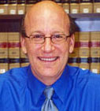

Symposium Speakers
Short Biographies
 Andrew Strauss Andrew Strauss is a professor of international law at Widener University School of Law. He specializes in public international law, international economic law, international transactions and international organizations. He earned his Bachelor of Arts from Princeton University's Woodrow Wilson School of Public and International Affairs and his Juris Doctorate from New York University School of Law where he served as a staff member on the Review of Law and Social Change. Prior to joining the Widener Law faculty, he practiced law in New York City for the law firms of Shearman & Sterling and Graham & James. His practice centered on international banking and finance.
Professor Strauss is co-author (with Burns Weston, Richard Falk and Hilary Charlesworth) of the fourth edition of International Law and World Order, a leading international law textbook. His articles have appeared in international journals such as Foreign Affairs, The Harvard Journal of International Law, and The Stanford Journal of International Law. He is most known for his theoretical contributions to international jurisdiction, his articles with Professor Richard Falk on democratizing the international system, and his work conceptualizing global warming litigation. This latter work has helped inspire legal actions that will likely be brought in the next few years and included ideas that were selected by the New York Times Magazine as among the most innovative of the year.
Professor Strauss is also a frequent public commentator on matters of international law and policy with articles appearing in such publications as The International Herald Tribune, The Nation, and The Financial Times. Among his contributions to the broadcast media, his radio commentaries have been aired on Public Radio International's Marketplace.
Overseas, Professor Strauss has served as a Fulbright Scholar in Ecuador where he studied tribal politics in the Amazon. He has taught Singaporean constitutional law on the law faculty of the National University of Singapore, and has served as the Director of the Geneva International Law Institute and the Nairobi International Law Institute. Domestically, he has been an Honorary Fellow at New York University School of Law's Center for International Studies.
Professor Strauss is internationally active in many civic and professional organizations. He has conducted human rights missions to Asian countries and been a consultant to both Human Rights Watch and Human Rights First. Professor Strauss is a member of the Executive Committee of the Section on International Law of the Association of American Law Schools, has served on the Editorial Board of World Editorial and International Law and is a Fellow of the Citizens for Global Solutions' World Federalist Institute.
Richard Falk
Richard Falk is the Albert G. Milbank Professor Emeritus of International Law at Princeton University and currently Visiting Distinguished Professor in Global and International Studies at the University of California, Santa Barbara.
Professor Falk has written over 400 articles, contributed hundreds of book chapters and has authored or coauthored over 50 books, including Crimes of War, Killer Technologies, Religion and Humane Global Governance; Human Rights Horizons; On Humane Governance: Toward a New Global Politics; International Law and World Order; Explorations at the Edge of Time; Revolutionaries and Functionaries; The Promise of World Order; Indefensible Weapons; Human Rights and State Sovereignty: A Study of Future Worlds; This endangered Planet; and he was the co-editor of Crimes of War.
Professor Falk has been at the helm of movements as diverse as championing the rights of indigenous people to promoting the successful campaign that led the International Court of Justice to rule on the legality of nuclear weapons.
Professor Falk serves a chair of the Nuclear Age peace Foundation’s Board of Director, and as honorary Vice president of the American Society of International Law. He is also a member of the Editorial Board of The Nation. Professor Falk also acted as counsel to Ethiopia and Liberia in the Southwest Africa Case before the International Court of Justice.
Gregory Fox
Gregory Fox is an Associate Professor of Law at Wayne State Law School. He has held fellowships at the Max Planck Institute for Comparative Public Law and Public International Law in Heidelberg, Germany and at the Schell Center for Human Rights at Yale Law School before beginning his teaching career.
Professor Fox is the recipient of a MacArthur Foundation/Social Science Research Council Fellowship in International Peace and Security. That fellowship enabled him to write The Right to Political Participation in International Law, which is one of the ten most cited articles ever published in the Yale Journal of International Law.
Professor Fox has also written the book Humanitarian Occupation. This book examines “internationalized territories” such as Bosnia, Kosovo and East Timor. In these places traditional notions of state sovereignty have been turned on their head, as the international community takes on the role of a national government. The book explores the reasons for creation of these operations and their legal justification.
Thomas Franck
Professor Franck is the Murry and Ida Becker Professor of Law Emeritus at New York University School of Law. He was the Director of the Center for International Studies from 1965-2002. In addition, he has taught in a visiting capacity at Stanford Law School, University of East Africa, York University, University of Toronto, Princeton’s Woodrow Wilson School, Hague Academy of International Law, Cambridge University, and Hastings College of Law. From 1973 to 1979, he also served as Director of the Carnegie Endowment for International Peace’s International Law Program, and from 1980-1982, as Director of Research at the United Nations Institute for Training and Research, Professor Franck’s interest in public international law is practical as well as theoretical. Indeed, he has acted as legal advisor or counsel to many foreign governments, including Tanganyika, Kenya, Zanzibar, Mauritius, Solomon Islands, El Salvador, Bosnia and Herzegovina and Chad and he recently represented Bosnia in a suit brought against Serbia under the Genocide Convention. He has served as a judge ad hoc before the World Court from 2001-2002. He is a member of the Tribunal constituted under the Law of the Sea Treaty to hear the boundary dispute between Guyana and Suriname. And, from 1986 to the present, he has been serving on the Department of State Advisory Committee on International Law. Professor Franck is past President of the American Society of International Law (1988-2000) and served as editor-in-chief of The American Journal of International Law from 1984-1993.
Daniele Archibugi
Daniele Archibugi is a Research Director at the Italian National Research Council (CNR) in Rome, and Professor of Innovation, Governance and Public Policy at the University of London, Birkbeck College.
He has worked and taught at the Universities of Sussex, Naples, Cambridge and Rome. In the academic year 2003-2004 he was the Leverhulme Visiting Professor at the London School of Economics and Political Science, and in the academic year 2004-2005 he was Lauro de Bosis Visiting Professor at Harvard University where he was affiliated with the Department of Government and the Minda de Gunzeberg Center for European Studies.
He is an advisor to the European Union, the OECD, several UN agencies and various national governments. He has led many research projects for the European Commissions and other international organizations.
Among his recent books, is Debating Cosmopolitics (Verso, 2003). He is now finishing work on The Theory and Practice of Cosmopolitan Democracy.
Kinhide Mushakoji
A respected Japanese authority on international affairs and a lifelong peace advocate, Mushakoji has been on the boards of several organizations, among them, the Japanese Peace Studies Association and the International Peace Research Association. He teaches at Ferris University Japan and is Secretary General of the International Movement Against All forms of Discrimination and Racism (IMADR).
Formerly the Vice-Rector of the regional and global Studies Division of the United Nations University for 13 years, Mushakoji is also former Director of the Institute of International Relations which he founded in 1969 at the Sophia University in Tokyo.
He is currently a Board Member of the Asian Cultural Forum on Development (ACFOD) and of the UN Voluntary Fund for Technical Assistance in the Field of Human Rights. He is the President of the Asia-Pacific Human Rights Information Centre and of the International Peace Centre in Osaka.
In the academic field, Mushakoji is a Professor in the Department of International Relations of the Chubu University and the Director of the Chubu Institute of Advanced Studies. He has published books and articles in Japanese and English on a variety of issues. His more recent contributions are: Nihon to Islam Sekai (Japan and the Islamic World) in the publication Sekai-shi no Shiten kara (What is Islam: From an Historical Perspective) and Nihon wa Sekai no tame ni Nani ga Dekiru ka: Wa’ no Sai-Kaishaku ni yoru Sekai no Nihon-ka ni Kokufuko (How Can Japan Contribute to the World: Re-interpreting ‘Wa’ to Overcome the Japanization of the World?) in the book Nihon no Katchi (A New Shape for Japan), and An Introduction to Peace Research, Japanese Foreign Policy in a Multi-Polar World and Global Issues and Interparadigmatic Dialogue – Essays on Multi-polar Politics.
He has written extensively on peace and security, racism and discrimination, patriarchal democracy, trafficking of women and the sex industry, cultural development and international politics among others.
Mushakoji was ACF Chair and a member of the ARENA Executive Board, 1994-1997. He is currently a member of the Editorial Committee.
Chandra Muzaffar
Prof. Chandra Muzaffar is a Professor of Global Studies, Universiti Sains Malaysia
Apart from writings on civilisational dialogue, he has also published extensively on religion, human rights, Malaysian politics and international relations. He has authored or edited 19 books and written numerous articles in English and Malay in various local and international journals. His latest book is entitled Global Ethic or Global Hegemony? (2005).
Chandra also founded a multi-ethnic social reform group in Malaysia called Aliran Kesedaran Negara (ALIRAN) (National Consciousness Movement) which sought to raise public awareness of issues pertaining to NGOs, and the International Movement for a Just World (JUST) which is concerned about challenges to social justice and human dignity in global politics. JUST also attempts to develop guiding ideas on a just and compassionate civilization based upon shared universal spiritual and moral values. Chandra sits on the Board of a number of other international NGO’s concerned with social justice and civilisational dialogue.
Among the academic awards Chandra has received is The Harry J. Benda Prize for distinguished scholarship on Southeast Asia from the Association of Asian Studies, North America. Chandra is married to Matiam Mohd Hashiom and they have two daughters.
David Kennedy
David Kennedy is the Manley O. Hudson professor of Law at Harvard Law School where he teaches international law, international economic policy, legal theory, law and development, and European Union law. He joined the faculty in 1981 after teaching in Germany. He holds a Ph.D. in international affairs from the Fletcher School at Tufts University and a J.D. from Harvard. He is the author of numerous articles on international law, history and legal theory.
Professor Kennedy served as chair of the Harvard Graduate Committee and Faculty Director of Graduate and International Legal Studies from 1991 to 1997. In 1991 he founded and continues to direct the European Law Research Center at Harvard which hosts fellows sponsors research and organizes conferences and professional training programs in European and international law.
Most widely known for his work developing new approaches to international law among younger scholars, Professor Kennedy has convened two dozen major international conferences bringing scholars from all parts of the globe to discuss and share their work. He has been particularly committed to developing new voices from the third world and among women in international affairs.
As a practicing lawyer, Prof. Kennedy has worked on numerous international projects, both commercial and public. He practiced with the New York firm of Cleary, Gottlieb, Steen and Hamilton in their Brussels office, where his work combined European antitrust litigation, government relations advising, and general corporate law. He has worked as a special consultant for the United Nations, as a legal advisor in the legal Services of the Commission of the European Communities, and consulted for a range of projects involving European and international law. He has served as advisor to a number of educational institutions and their law and graduate programs, including Brown University, the University of Quebec Lavalle and the Monterey Institute of International Studies.
Professor Kennedy has lectured at numerous universities and institutes, and has been a Visiting Professor at New York University in 1999, at the University of Paris-Nanterre from 1995-1998 and 2001-2002; in the spring of 1998. he was a Visiting Scholar at the School of Oriental and African Studies, University of London 2000-2001.
Robert C. Johansen
Robert C. Johansen is Professor of Political Science at the University of Notre Dame and Senior Fellow at the Kroc Institute of International Peace Studies. He is author of The National Interest and the Human Interest: An Analysis of U.S. Foreign Policy (Princeton University Press), co-editor of The Constitutional Foundation of World Peace (SUNY), and numerous scholarly articles on global governance.
He has held visiting appointments at Princeton and Harvard. His current research focuses on international norms, the United Nations, and the effort to increase compliance with the prohibitions of war crimes, genocide, crimes against humanity, and crimes against the peace. Robert Johansen (Ph.D. Columbia, 1968) specializes in issues of international ethics and global governance, the United Nations and the maintenance of peace and security, and peace and world order studies.
His major publications include The National Interest and the Human Interest: An Analysis of U.S. Foreign Policy (Princeton, 1980) and Toward an Alternative Security System: Moving Beyond the Balance of Power in the Search for World Security (World Policy Institute, 1983), and he co-edited World Policy Journal, World Politics, The Journal of Peace Research, Global Governance, Third World Quarterly, Mershon International Studies Review, and Review of Politics. More popular articles on public policy have appeared in The Atlantic, Harper’s, The New York Times, Christian Century, and other periodicals. He is the founding editor-in-chief of World Policy Journal. He is conducting research on enhancing U.N. peacekeeping and enforcement through an institutional grant from the United States Institute of Peace. He is also conducting research on the role of non-governmental organizations in promoting compliance with international humanitarian law and the establishment of the permanent International Criminal Court, under a grant from the Aspen Institute. He was Director of Graduate Studies at the Kroc Institute from 1987-1998, 2001-2002 and has been a senior fellow at the Kroc Institute since 1986.
Heikki Patomaki
Heikki Patomaki is a Professor of International Relations at the university of Helsinki. Until Summer 2003, he was a Professor of World Politics and Economy at the Nottingham Trent University. He is also the Research Director of NIGD, the Network Institute for Global Democratisation and from January 2006 onwards the Vice Director of the Finnish Centre of Excellence in Global Governance Research.
His research interests comprise critical realism as a philosophy of social sciences, theories and issues of peace research and global political economy; and global democratization.
His most recent books include Democratising Globalisation: The Leverage of the Tobin Tax (Zed Books, 2001); After International Relations: Critical Realism and the (Re)Construction of World Politics (Routledge, 2002); A Possible World: Democratic Transformation of Global Institutions (with Teivo Teivainen, Zed Books, 2004); and Ylioposto Oyj. Tulosjohtamisen ongelmat - ja vaihtoehto (Gaudeamus, 2005; forthcoming in English as University Inc. Problems of the New Public Mangement' - And an Alternative).
Liliana Obregón
Liliana Obregón is a professor of international law at Universidad de los Andres Law School in Bogotá, Colombia where she also directs the new international law program. She specializes in the history and theory of international law and international institutions in Latin America. She was an assistant researcher for the Center for international Studies (CEI) on issues of drug trafficking, international human rights and international humanitarian law. She also co-authored two books on the regional integration policies between Colombia and Venezuela.
She has a Masters in International Affairs from the School of Advanced International Studies (SAIS) of the John Hopkins University in Bologna, Italy (1991-1992) and Washington D.C. (1992-1993). After graduating from SAIS Liliana worked for Conservation International and the Center for Justice and International Law (CEJIL). In 1996, Liliana went to Harvard Law School to continue her studies with the support of the Harvard Law School Human Rights Program. She finished her LL.M. in 1997. During her LL.M year she also co-authored a book chapter titles “In Search of Hope: the Plight of Displaced Colombians” published by the Brookings Institution. After being admitted in the SJD program at Harvard Law School in 1997, she began to work more closely on revisiting the history of international legal thought in Latin America, under the guidance of her doctoral adviser David Kennedy, and with the additional suggestions of her readers Duncan Kennedy and Doris Sommer also of Harvard University. While at Harvard, Liliana also worked on a series of entries for the Encyclopedia Africana directed by Professor Henry Louis Gates and Anthony Appiah and published by Perseus Books and Encarta Microsoft. The New York Times Review of books called one of these entries (“Colonial Critics of Slavery”) a “gem”. Since then, three further versions of this article have been published in English and Spanish by the Harvard Review of Latin America, Beyond Law and Afrodescendients en las Americas.
Liliana successfully finished writing her doctoral dissertation (“Nineteenth Century Crillo Interventions in International Law”) in 2002 as a visiting scholar at the University of Wisconsin Law School Global Studies Program. In 2003, she returned to work and live in her native Bogotá and has been teaching, writing and participating in international conferences based on her previous education and research. Articles and book chapters that are based on her discussion are forthcoming in the Wisconsin Journal of International Law, University of Pittsburgh series Criticas, Cambridge University Press book International Law and Its Others, Third World Quarterly and the Leiden Journal of International Law.
Zaid Ibrahim
Mohd Zaid Ibrahim is a Member of the Malaysian Parliament. He is also Chairman of the Pro-Democracy Myanmar Caucus (Malaysian Parliament) and ASEAN Inter-Parliamentary Myanmar Caucus (AIPMC). Zaid is also the Chairman and Founding Partner of Zaid Ibrahim & Co., Malaysia’s largest law firm.
He has extensive experience in advising on a broad spectrum of legal matters encompassing corporate, administrative, constitutional, construction, financing and commercial law.
Zaid also advises clients on a broad range of regulatory matters and issues in dealing with the Federal and State Governments and their respective agencies in Malaysia. He represents and advises several public companies on takeovers and mergers, corporate restructuring and financing matters.
Zaid was conferred the Darjah Mulia Seri Melaka (DMSM) which carries the title “Datuk” by the Governor of Malacca ion October 2003.
Zaid is a Director of Tenaga Nasional Berhad and is currently a President of the Malaysian Civil Liberties, a society established to promote freedom and the rule of law. He holds a Bachelor of Laws (Honours) from the University of London, he is a Barrister-at-Law from the Inner Temple, and he is an Advocate and Solicitor of the High Court of Malaya.
Heraldo Muñoz
Heraldo Muñoz is the Permanent Representative of Chile to the United Nations. Ambassador Muñoz holds a Ph.D. in International Studies from the University of Denver, Colorado (1978), a Diploma in International Relations from the Catholic University of Chile (1975, graduated with honors), and also took courses at Harvard University. He received a B.A. with a major in Political Science at the State University of New York, Oswego. He is a recipient of the “Distinguished Alumnus Award” from the Graduate School of International Studies at the University of Denver (1991), and he was bestowed with the title of Doctor Honoris Causa from the State University of New York (1996). He has received fellowships from Resources for the Future, the Ford Foundation, the Tinker Foundation, the Twentieth Century Fund, and the MacArthur Foundation. He was a Ph.D. fellow at the Brookings Institution, Washington, D.C. (1977).
Ambassador Muñoz was president of The Economist Conference, Chile (1998-1999), and president of Latinanalyst Consultores. He founded and was Director of the Foreign Policy Institute, “Programa de Seguimiento de las Politicas Exteriores Latinoamericana” (PROSPEL), Santiago, Chile, 1983-1990. He has been a visiting professor or lecturer at several universities and diplomatic academies in the United States, Europe, and Latin America.
Ambassador Muñoz has published more that 20 books and dozens of essays in academic journals such as Foreign Policy, The Journal of Democracy, The Journal of Interamerican and World Affairs, and Latin American Research Review. Among his books in English: Latin American Nations in World Politics, 2nd Edition (Boulder and London: Westview Press, 1998), co-edited with J. Tulcin. In Spanish, his most recent book is Globalización XXI (Santiago: Aguilar, 2000). He has written numerous op-ed pieces in newspapers, such as El Mercurio, Fohla de Sao Paulo, The Los Angeles Times, and The Miami Herald, and Pàgina 12. He has been often interviewed by written media, such as The Washington Post, The New York Times, and Time.
Leila Nadya Sadat
Professor Sadat teaches international, comparative and U.S. law courses at Washington University School of Law in St. Louis. Ms. Sadat is also a leading authority in international criminal law and human rights and is particularly well-known for her expertise on the International Criminal Court. Named to chair the International Law Association committee on the Court in 1995, she authored or edited several monographs both in her capacity as chair, and writing individually. In addition, she was a NGO delegate to the U.N. Preparatory Committee and to the 1998 U.N. diplomatic conference in Rome at which the Court was established.
In March 2000, her article The New International Criminal Court: an Uneasy Revolution, was published in the Georgetown Law Journal. In 2002 she published a monograph, The International Criminal Court and the Transformation of International Law: Justice for the New Millennium, which was supported by a grant from the United States Institute of Peace and won the “Book of the Year” award from the International Association of Penal Law (American National Section).
Most recently she has published several essays on U.S. foreign policy and international criminal law including Terrorism and the Rule of Law, which was published in volume 3 of the Washington University Global Studies Law Review. Her most recent article, Exile, Amnesty and International Law recently appear in volume 81 of the Notre Dame Law Review.
From May 2001 until September 2003, Professor Sadat served as a Congressional appointee to the nine-member U.S. Commission for International religious Freedom. More recently, she was tapped to participate in an International Bar Association project to train Iraqi lawyers, judges and prosecutors in human rights.
Professor Sadat is often heard on national media, and has an active speaking schedule. Sadat was recently elected Secretary of the American Society of Comparative Law, and Vice-President and Co-Director of Studies of the International Law Association. She is also a member of the American Law Institute and the International Law Association. She is also a member of the American Law Institute and the International Academy of Comparative Law, and has been a member of the Executive Council and Executive Committee of the American Society of International Law.
Dr. Kimon Valaskakis
Dr. Kimon Valaskaskis is the President of the Global Governance Group. He has pursued four converging career paths. He has been an academic, an executive, a consultant and a diplomat. Holding a Ph.D. in Economics from Cornell University and a French law degree, his academic career has encompassed 30 years of teaching at the University of Montreal and other universities in Canada and Europe.
As an executive, he has headed the Gamma Institute, and international think tank, specializing in forecasting and planning studies. In this capacity he has directed major research projects for the Canadian federal and provincial governments and for various international organizations. His consulting experience involved being the chairman of Isogroup Consultants which conduct international strategic plans for major multinational firms.
Finally, his diplomatic experience has centered on his position as Canadian ambassador to the OECD and the spin-off activities it has generated.